12
13
.15 16 17
■ code/ecf/forkprob2. c
判断下面哪个输出是可能的。注意： atexit 函数以一个指向函数的指针为输入，并将它添加到函 数列表中（初始为空），当 exit 函数被调用时，会调用该列表中的函数。
112^02
211020
102120
122001
100212
**8.19
下面的函数打印多少行输出？给出一个答案为《的函数。假设1。 code/ecf/forkprob8,c
void foo(int n) int i;
for (i = 0; i < n; i++) ForkO ; printf("hello\n"); exit(0);
code/ecf/forkprob8. c
**8.20
使用execve编写一个叫做myls的程序，该程序的行为和/bin/ls程序的一样。你的程序应该接 受相同的命令行参数，解释同样的环境变量，并产生相同的输出。
Is 程序从 COLUMNS 环境变量中获得屏幕的宽度。如果没有设置 COLUMNS, 那么 Is 会假设屏幕 宽 80 列。因此，你可以通过把 COLUMNS 环境设置得小于 80, 来检查你对环境变量的处理 ：
unix> setenv COLUMNS 40 皿 ix> ./myls ...output is 40 columns wide unix> unsetenv COLUMNS 皿 ix> ./myls ...output is now 80 columns wide
下面程序的可能的输出序列是什么？
**8.21
code/ecf/waitprob3. c
2
3
4
5
6
7
9
10
11
12
13
int mainO
if (forkO == 0) { printf("a"); exit(0);
>
else -[
printf("b"); waitpid(-l, NULL, 0);
}
printf("c");
exit(0);
code/ecf/waitprob3. c
V8.22
**8.23 V 8.24
V8.25 tt 8.26
编写Unix system 函数的你自己的版本 int mysystem(char *command);
mysystem函数通过调用“/bin/sh-c command”来执行command,然后在command完成后返 回。如果command (通过调用exit函数或者执行一条return语句）正常退出，那么mysystem 返回command退出状态。例如，如果command通过调用exit ( 8 )终止，那么mysystem返回值 8。否则，如果command是异常终止的，那么mysystem就返回外壳返回的状态。
你的一个同事想要使用信号来让一个父进程对发生在一个子进程中的事件计数。其思想是每次发生 一个事件时，通过向父进程发送一个信号来通知它，并且让父进程的信号处理程序对一个全局变量 counter 加一，在子进程终止之后，父进程就可以检查这个变量。然而，当他在系统上运行图 8-41 中的测试程序时，发现当父进程调用 printf 时， counter 的值总是 2, 即使子进程向父进程发送 了 5个信号。他很困惑，向你寻求帮助。你能解释这个程序有什么错误吗？
修改图8-17中的程序，以满足下面两个条件：
每个子进程在试图写一个只读文本段中的位置时会异常终止。
父进程打印和下面所示相同（除了 PID)的输出：
child 12255 terminated by signal 11: Segmentation fault child 12254 terminated by signal 11: Segmentation fault
提示：请参考 psignal (3> 的 man 页。
编写fgets函数的一个版本，叫做tfgets,它5秒钟后会超时。tfgets函数接收和fgets相同 的输入。如果用户在5秒内不键入一个输入行，tfgets返回NULL。否则，它返回一个指向输入行 的指针。
以图8-22中的示例作为开始点，编写一个支持作业控制的外壳程序。外壳必须具有以下特性：
•用户输入的命令行由一个name、零个或者多个参数组成，它们都是由一个或者多个空格分隔开 的。如果name是一个内置命令，那么外売就立即处理它，并等待下一个命令行。否则，外壳就假 设name是一个可执行的文件，’在一个初始的子进程（作业）的上下文中加载并运行它。作业的进 程组ID与子进程的PID相同。
•每个作业是由一个进程ID (PltO或者一个作业ID (JID)来标识的，它是由一个外壳分配的任意 的小正整数。JID在命令行上用前缀来表示。比如，“％5”表示JID5,而“5”表示PID5。 •如果命令行以&来结束，那么外壳就在后台运行这个作业。否则，外壳就在前台运行这个作业。 •输入 Ctrl -c (ctrl-z), 使得外壳发送一个SIGINT (SIGTSTP)信号给前台进程组中的每个进程。
code/ecf/counterprob. c
#include "csapp.h"
int counter = 0; void handler(int sig)
{
counter++;
sleep(1 );卜 Do some work in the handler */ return;
}
int mainO {
int i;
Signal(SIGUSR2, handler);
if (ForkO == 0) { /* Child */
for (i = 0; i < 5; i+十 ）i
Kill(getppid()， SIGUSR2); printf("sent SIGUSR2 to parent\n");
>
23
24
exit(O);
}
Wait(NULL);
23
29
printf (•• counter=%d\n" , counter); exit(O);
>
code/ecf/counterprob. c
图8-41家庭作业8.23中引用的计数器程序
•内置命令jobs列出所有的后台作业。
•内置命令bg<job>通过发送一个SIGCONT信号重启<job>,然后在后台运行它。<job>参数 可以 是一个PID, 也可以 是一个JID。
•内置命令fg<job>通过发送一个SIGCONT信号重启<job>,然后在前台运行它。
•外壳回收它所有的僵死子进程。如果任何作业因为它收到一个未捕获的信号而终止，那么外壳就输 出一条信息到终端，包含该作业的PID和对违规信号的描述。
图8-42展示了一个示例的外壳会话。
练习题答案
练习题 8.1进程A和B是互相并发的，就像B和C 一样，因为它们各自的执行是重叠的，也就是一个进程 在另一个进程结束前开始。进程A和C不是并发的，因为它们的执行没有重叠；A在C开始之前就结束了。 练习题 8.2在图8-15中的示例程序中，父子进程执行无关的指令集合。然而，在这个程序中，父子进程 执行的指令集合是相关的，这是有可能的，因为父子进程有相同的代码段。这会是一个概念上的障碍，所 以请确认你理解了本题的答案。
A.这里的关键点是子进程执行了两个printf语句。在fork返回之后，它执行了第8行的printf。 然后它从if语句中出来，执行了第9行的printf语句。下面是子进程产生的输出：
printf1: x=2 printf2: x=l
B.父进程只执行了第9行的printf ：
printf2: x=0
unix> ./shell |
Run your shell program |
||
> bogus |
|||
bogus: Command not found. |
Execve Ccin' t find executable |
||
> foo 10 |
|||
Job 5035 terminated by signal: |
Interrupt |
User types ctrl-c |
|
> foo 100 & |
|||
[1] 5036 foo 100 & |
|||
> foo 200 & |
|||
[2] 5037 foo 200 & |
|||
> jobs |
|||
[1] 5036 Running foo |
100 & |
||
[2] 5037 Running foo |
200 & |
||
> fg %1 |
|||
Job [1] 5036 stopped by |
signal: |
Stopped |
User types ctrl -z |
> jobs |
|||
[1] 5036 Stopped foo |
100 & |
||
[2] 5037 Running foo |
200 & |
||
> bg 5035 |
|||
5035: No such process |
|||
> bg 5036 |
|||
[1] 5036 foo 100 & |
|||
> /bin/kill 5036 |
|||
Job 5036 terminated by signal: |
Terminated |
||
> fg %2 |
Wait ： for fg job to finish. |
||
> quit |
|||
皿ix> |
Back to the Unix shel?t |
||
图8-42家庭作业8.26的外壳会话示例
练习题8.3父进程打印匕然后是c。子进程打印a,然后是c。意识到你不能对父进程和子进程是如何交 错执行的做任何假设是非常重要的。因此，任何满足6 —c和a — C 的拓扑排序都是可能的输出序列。有 四个这样的序列： acbc 、 bcac 、 abcc 和 bacc 0 练习题 8.4 A. 每次我们运行这个程序，就会产生 6 个输出行。
输出行的顺序根据系统不同而不同 ， 取决于内核如何交替执行父子进程的指令。一般而言，满足下 图的任意拓扑排序都是合法的顺序：
—> (*0'' |
—> “2" —> f (Bye 、 7 |
父进程 |
/ |
||
Hello'' |
||
\ |
||
—> “ 1 •, |
—> f { Bye' ' |
子进程 |
比如，当我们在系统上运行这个程序时，会得到下面的输出：
unix> ./waitprobl Hello
0
1
Bye
2
Bye
在这种情况下，父进程首先运行，在第6行打印“Hello”，在第8.行打印“0”。对wait的调用会阻 塞，因为子进程还没有终止，所以内核执行一个上下文切换，并将控制传递给子进程，子进程在第8行打 印“1”，在第15行打印“Bye”，然后在第16行终止，退出状态为2。在子进程终止后，父进程继续，在 第12行打印子进程的退出状态，在第15行打印“Bye”。
练习题8.5
code/ecf/snooze, c
unsigned int snooze(unsigned int secs) {
unsigned int rc = sleep(secs);
:,secs);
— code/ecf/snooze. c -code/ecf/myecho. c
printf("Slept for %u of %u secs.\n",
return rc;
>
练习题8.6
#include "csapp.h"
int main (int argc, char *argv[], char *envp []) int i;
printf("Command line arguments:\n"); for (i=0; argv[i] != NULL; i++)
printf(" argv[%2d]: %s\n", i, argv[i]);
printf("\n")；
printf("Environment variables:\n"); for (i=0; envp[i] != NULL; i++)
printf(" envp[%2d]: %s\n", i, envp[i]);
exit(0);
code/ecf/myecho. c
练习题8.7只要休眠进程收到一个未被忽略的信号，sleep函数就会提前返回。但是，因为收到一个 SIGINT信号的默认行为就是终止进程（见图8-25),我们必须设置一个SIGINT处理程序来允许sleep函 数返回。处理程序简单地捕获SIGNAL,并将控制返回给sleep函数，该函数会立即返回。
<secs>\n", argv[0]);
18
19
21 22
/* Install SIGINT handler *,/
SIG.ERR)
)；
24
25
26
if (argc != 2) {
fprintf(stderr, "usage: %s exit(0);
}
if (signal(SIGINT, handler)== unix_error("signal error\n' (void)snooze(atoi(argv[1])); exit(0);
code/ecf/snooze. c
练习题8.8这个程序打印字符串“213”，这是卡内基梅隆大学CSiAPP课程的缩写名。父进程开始时打印 “2”，然后创建子进程，子进程会陷入一个无限_环。然后父进程向子进程发送一个信号，并等待它终止。 子进程捕获这个信号（中断这个无限循环），对计数器值（从初始值2)减一，打印“1”，然后终止。在父 进程回收子进程之后，它对计数器值（从初始值2)加一，打印“3”，并且终止。
第 9 章 |
Computer Systems : A Programmer J s Perspective, 2E
虚拟存储器
一个系统中的进程是与其他进程共享CPU和主存资源的。然而，共享主存会形成一些特殊 的挑战。随着对CPU需求的增长，进程以某种合理的平滑方式慢了下来。但是如果太多的进程 需要太多的存储器，那么它们中的一些就根本无法运行。当一个程序没有空间可用时，那就是它 运气不好了。存储器还很容易被破坏。如果某个进程不小心写了另一个进程使用的存储器，它就 可能以某种完全和程序逻辑无关的令人迷惑的方式失败。
为了更加有效地管理存储器并且少出错，现代系统提供了一种对主存的抽象概念， 叫做虚拟 存储器 （VM)。虚拟存储器是硬件异常、硬件地址翻译、主存、磁盘文件和内核软件的完美交 互，它为每个进程提供了一个大的、一致的和私有的地址空间。通过一个很清晰的机制，虚拟存 储器提供了三个重要的能力：1)它将主存看成是一个存储在磁盘上的地址空间的高速缓存，在 主存中只保存活动区域，并根据需要在磁盘和主存之间来回传送数据，通过这种方式，它高效地 使用了主存。2)它为每个进程提供了一致的地址空间，从而简化了存储器管理。3)它保护了每 个进程的地址空间不被其他进程破坏。
虚拟存储器是计算机系统最重要的概念之一。它成功的一个主要原因就是因为它是沉默地、 自动地工作的，不需要应用程序员的任何干涉。既然虚拟存储器在幕后工作得如此之好，为什么 程序员还需要理解它呢？有以下几个原因：
•虚 拟存储器是中心的。 虚拟存储器遍及计算机系统的所有层面，在硬件异常、汇编器、链 接器、加载器、共享对象、文件和进程的设计中扮演着重要角色。理解虚拟存储器将帮助 你更好地理解系统通常是如何工作的。
• 虚拟存储器是强大的。 虚拟存储器给予应用程序强大的能力，可以创建和销毁存储器片 (chunk)、将存储器片映射到磁盘文件的某个部分，以及与其他进程共享存储器。比如， 你知道你可以通过读写存储器位置读或者修改一个磁盘文件的内容吗？或者是你可以加载 一个文件的内容到存储器中，而不需要进行任何显式的拷贝吗？理解虚拟存储器将帮助你 利用它的强大功能在你的应用程序中添加动力。
• 虚拟存储器是危险的。 每次应用程序引用一个变量、间接引用一个指针，或者调用一个诸 如malloc这样的动态分配程序时，它就会和虚拟存储器发生交互。如果虚拟存储器使用 不当，应用将遇到复杂危险的与存储器有关的错误。例如，一个带有错误指针的程序可以 立即崩溃于“段错误”或者“保护错误”，它可能在崩溃之前还默默地运行几个小时，或 者是最令人惊慌地，运行完成却产生不正确的结果。理解虚拟存储器以及诸如malloc之 类的管理虚拟存储器的分配程序，可以帮助你避免这些错误。
这一章从两个角度来看虚拟存储器。本章的前一部分描述虚拟存储器是如何工作的。后一部 分描述的是应用程序如何使用和管理虚拟存储器。不可避免的事实是虚拟存储器很复杂，本章的 很多地方都反映了这一点。好消息就是如果你掌握这些细节，你就能够手工模拟一个小系统的虚 拟存储器机制，而且虚拟存储器的概念将永远不再神秘。
后一部分是建立在这种理解之上的，向你展示了如何在程序中使用和管理虚拟存储器。你将 学会如何通过显式的存储器映射和对像malloc程序这样的动态存储分配器的调用来管理虚拟 存储器。你还将了解到C程序中的大多数常见的与存储器有关的错误，并学会如何避免它们的 出现。
9.1 物理和虚拟寻址
主存
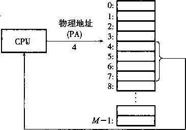
数据字
图 9-1 一个使用物理寻址的系统
计算机系统的主存被组织成一个由M个连续的字节大小的单元组成的数组。每字节都有 一个唯一的物理地址（Physical Address, PA )。 第一个字节的地址为0,接下来的字节地址为 1 ， 再下一个为2,依此类推。给定这种简单的结构，CPU访问存储器的最自然的方式就是使用 物理地址。我们把这种方式称为物 理寻址 （physical addressing )。 图9-1展示了一个物理寻址的示例，该 示例的上下文是一条加载指令，它读取从物理地址4 处开始的字。
当CPU执行这条加载指令时，它会生成一个有效 物理地址，通过存储器总线,把它传递给主存。主存 取出从物理地址4处开始的4字节的字，并将它返回 给CPU，CPU会将它存放在一个寄存器里。
主存
早期的PC使用物理寻址，而且诸如数字信号处 理器、嵌人式微控制器以及Cray超级计算机这样的系 统仍然继续使用这种寻址方式。然而，现代处理器使 用的是一种称为虚 拟寻址 （virtual addressing)的寻址 形式，参见图9-2。
CPU 芯片
哩地址
(PA)
4
虚拟地址地址翻译 (VA)
CPU ► MMU
4100 ;
M-1:
数据字
图9-2 —个使用虚拟寻址的系统
使用虚拟寻址时，CPU通过生成 一个虚拟地址 （Virtual Address, VA)来访问主存，这个虚 拟地址在被送到存储器之前先转换成适当的物理地址。将一个虚拟地址转换为物理地址的任务叫 做地 址翻译 （address translation)。就像异常处理一样，地址翻译需要CPU硬件和操作系统之间 的紧密合作。CPU芯片上叫做 存储器管理单元 （Memory Management Unit, MMU)的专用硬件, 利用存放在主存中的査询表来动态翻译虚拟地址，该表的内容是由操作系统管理的。
9.2 地址空间
地址空间 （address space)襄一个非负整数地址的有序集合：
{0, 1, 2, •••}
如果地址空间中的整数是连续的，那么我们说它是一个 线性地址空间 （linear address space)。为了 简化讨论，我们总是假设使用的是线性地址空间。在一个带虚拟存储器的系统中，CPU从一个有 iV= 2”个地址的地址空间中生成虚拟地址，这个地址空间称为 虚拟地址空间 （virtual address space):
{0, 1, 2,…， N-1}
一个地址空间的大小是由表示最大地址所需要的位数来描述的。例如，一个包含个地址的 虚拟地址空间就叫做一个 n 位地址空间。现代系统典型地支持32位或者64位虚拟地址空间。
一个系统还有一个物理地址空间（physical address space),它与系统中物理存储器的M个字 节相对应 ：
{0, 1, 2,…， M- 1}
M不要求是2的幂，但是为了简化讨论，我们假设M=2 W 。
地址空间的概念是很重要的，因为它清楚地区分了数据对象（字节）和它们的属性（地址)。 一旦认识到了这种区别，那么我们就可以将其推广，允许每个数据对象有多个独立的地址，其中 每个地址都选自一个不同的地址空间。这就是虚拟存储器的基本思想。主存中的每个字节都有一 个选自虚拟地址空间的虚拟地址和一个选自物理地址空间的物理地址 。.
_练习题9.1完成下面的表格，填写缺失的条目，并且用适当的整数取代每个问号。利用下列单 位：K = 2 1() (千），M = 2 2 ° (兆，百万），G = 2 3G (千兆，十亿），T = 2 4 °(万亿）,P = 2 5 °(千千兆），或 E = 2 60 (千兆兆）。 '
虚拟地址位数（/0 |
虚拟地址数 (N) |
最大可能的虚拟地址 |
8 |
||
2 ? = 64K |
||
2 32 - 1 = ?G - 1 |
||
2 ? = 256T |
||
64 |
9.3 虚拟存储器作为缓存的工具
概念上而言，虚拟存储器（VM)被组织为一个由存放在磁盘上的iV个连续的字节大小的单 元组成的数组。每字节都有一个唯一的虚拟地址，这个唯一的虚拟地址是作为到数组的索引的。 磁盘上数组的内容被缓存在主存中。和存储器层次结构中其他缓存一样，磁盘（较低层）上的数 据被分割成块，这些块作为磁盘和主存（较高层）之间的传输单元。VM系统通过将虚拟存储器 分割为称为虚拟页（Virtual Page, VP)的大小固定的块来处理这个问题。每个虚拟页的大小为 P = 2〃字节。类似地，物理存储器被分割为物理页（Physical Page, PP),大小也为P字节（物 理页也称为页帧（pageframe))。
在任意时刻，虚拟页面的集合都分为三个不相交的子集：
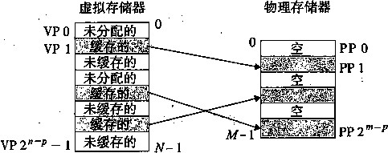
虚拟页（VP) 物理页（PP)
存储在磁盘上 缓存在DRAM中
图9-3 —个VM系统是如何使用主存作为缓存的
• 未分配的：VM系统还未分配（或者创建）的页。未分配的块没有任何数据和它们相关联, 因此也就不占用任何磁盘空间。
• 缓存的：当前缓存在物理存储 器中的已分配页。
• 未缓存的：没有缓存在物理存 储器中的已分配页。
图9-3中的示例展示了一个有8 个虚拟页的小虚拟存储器。虚拟页0 和3还没有被分配，因此在磁盘上还 不存在。虚拟页1、4和6被缓存在 物理存储器中。页2、5和7已经被 分配了，但是当前并未缓存在主存中。
DRAM缓存的组织结构
为了有助于清晰地理解存储层次结构中不同的缓存概念，我们将使用术语SRAM缓存来表 示位于CPU和主存之间的Ll、L2和L3高速缓存，并且用术语DRAM缓存来表示虚拟存储器 系统的缓存，它在主存中缓存虚拟页。
在存储层次结构中，DRAM缓存的位置对它的组织结构有很大的影响。回想一下，SRAM 比DRAM要快大约10倍，而DRAM要比磁盘快大约100 000多倍。因此，DRAM缓存中的 不命中比起SRAM缓存中的不命中要昂贵得多，因为DRAM缓存不命中要由磁盘来服务，而 SRAM缓存不命中通常是由基于DRAM的主存来服务的。而且，从扇区中连续的字节的时间开 销比起读这 个磁盘 的一个扇区读取第一字节要慢大约100 000倍。归根到底，DRAM缓存的组织 结构完全是由巨大的不命中开销驱动的。
因为大的不命中处罚和访问第一字节的开销，虚拟页往往很大，典型地是4KB〜2MB。由 于大的不命中处罚，DRAM缓存是全相连的，也就是说，任何虚拟页都可以放置在任何的物理 页中。不命中时的替换策略也很重要，因为替换错了虚拟页的处罚也非常之高。因此，与硬件对 SRAM缓存相比，操作系统对DRAM缓存使用了更复杂精密的替换算法（这些替换算法起出了 我们的讨论范围）。最后，因为对磁盘的访问时间很长，DRAM缓存总是使用写回，而不是直写。
页表
同任何缓存一样，虚拟存储器系统必须有某种方法来判定一个虚拟页是否存放在DRAM中 的某个地方。如果是，系统还必须确定这个虚拟页存放在哪个物理页中。如果不命中，系统必须 判断这个虚拟页存放在磁盘的哪个位置，在物理存储器中选择一个牺牲页，并将虚拟页从磁盘拷 贝到DRAM中，替换这个牺牲页。
这些功能是由许多软硬件联合提供的，包括操作系统软件、MMU (存储器管理单元）中的 地址翻译硬件和一个存放在物理存储器中叫 做页表 （page table)的数据结构，页表将虚拟页映 射到物理页。每次地址翻译硬件将一个虚拟地址转换为物理地址时都会读取页表。操作系统负责 维护页表的内容，以及在磁盘与DRAM之间来回传送页。
物理页号或 有效位磁盘地址 PTEO
物理存储器 (DRAM)
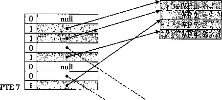
PP0
PP3
常驻存储器的页表 (DRAM)
虚拟存储器 (磁盘）
I VP1 1
VP2
J
VP3
VP4
VP6
图9-4展示了一个页表的基本组织结构。页表就是一个页 表条目 （Page Table Entry, PTE) 的数组。虚拟地址空间中的每个页在页表中一个固定偏移量处都有一个PTE。为了我们的目的, 我们将假设每个PTE是由一个 有效位 （valid bit)和一个《位地址字段组成的。有效位表明了该 虚拟页当前是否被缓存在DRAM中。如果设置了有效位，那么地址字段就表示DRAM中相应的 物理页的起始位置，这个物理页中缓存 了该虚拟页。如果没有设置有效位，那 么一个空地址表示这个虚拟页还未被分 配。否则，这个地址就指向该虚拟页在 磁盘上的起始位置。
VP7
图9-4中的示例展示了一个有8个 虚拟页和4个物理页的系统的页表。四 个虚拟页（VP1、VP2、VP4和VP7)当 前被缓存在DRAM中。两个页（VP0和 VP 5)还未被分配，而剩下的页（VP 3 和VP6)已经被分配了，但是当前还未 被缓存/图9-4中有一个要点要注意，
图9-4页表
因为DRAM缓存是全相连的，任意物
理页都可以包含任意虚拟页。
®练习题9.2确定下列虚拟地址大小（《)和页大小（尸）的组合所需要的PTE数量：
n |
P^2 P |
#PTE |
16 |
4K |
|
16 |
8K |
|
32 |
4K |
|
32 |
8K |
9.3.3页命中
考虑一下，当CPU读苞含在VP 2中的虚拟存储器的一个字时会怎样，VP 2是被缓存在 DRAM中（见图9-5)。使用我们将在9.6节中详细描述的一种技术，地址翻译硬件将虚拟地址 作为一个索引来定位PTE 2,并从存储器中读取它。因为设置了有效位，那么地址翻译硬件就知 道VP 2是缓存在存储器中的了。所以它使用PTE中的物理存储器地址（该地址指向PP1中缓 存页的起始位置)，构造出这个字的物理地址。
物理存储器
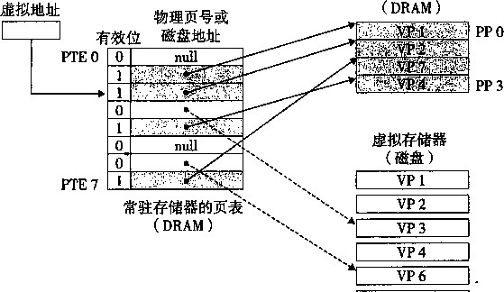
VP7
图 9-5 VM 页命中。对 VP 2 中一个字的引用就会命中
9.3.4缺页
在虚拟存储器的习惯说法中，DRAM缓存不命中称为缺页（page fault)。图9-6展示了在缺 页之前我们的示例页表的状态。CPU引用了 VP 3中的一个字，VP 3并未缓存在DRAM中。地 址翻译硬件从存储器中读取PTE 3,从有效位推断出VP 3未被缓存，并且触发一个缺页异常。
缺页异常调用内核中的缺页异常处理程序，该程序会选择一个牺牲页，在此例中就是存放在 卩卩3中的¥?4。如果VP 4已经被修改了，S5么内核就会将它拷贝回磁盘。无论哪种情况，内核 都会修改VP4的页表条目，反映出VP4不再缓存在主存中这一事实。
接下来，内核从磁盘拷贝VP 3到存储器中的PP 3,更新PTE3,随后返回。当异常处理程 序返回时，它会重新启动导致缺页的指令，该指令会把导致缺页的虚拟地址重发送到地址翻译硬 件。但是现在，VP 3已经缓存在主存中了，那么页命中也能由地址翻译硬件正常处理了。图9-7 展示了在缺页之后我们的示例页表的状态。
虚拟存储器是在20世纪60年代早期发明的，远在CPU-存储器之间差距的加大引发产生 SRAM缓存之前。因此，虚拟存储器系统使用了和SRAM缓存不同的术语，即使它们的许多概 念是相似的。在虚拟存储器的习惯说法中，块被称为页。在磁盘和存储器之间传送页的活动叫做 交换 （swapping)或者页 面调度 （paging)。页从磁盘换入（或 者页面调入） DRAM和从DRAM 换出 （或 者页面调出） 磁盘。一直等待,直到最后时刻，也就是当有不命中发生时， 才 换入页 面的这种策略称为 按需页面调度 （demand paging)。也可以釆用其他方法，例如尝试着预测不命 中，在页面实际被引用之前就换入页面。然而，所有现代系统都使用的是按需页面调度的方式。
物理存储器
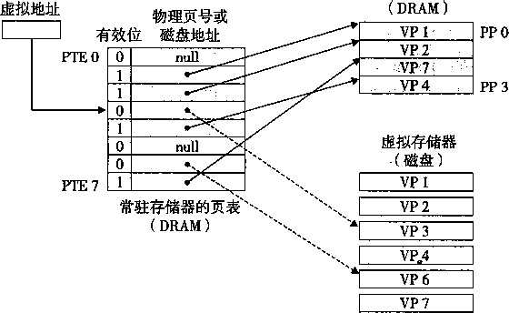
图9-6 VM缺页（之前)。对VP3中的字的引用不命中，从而触发了缺页
物理存储器
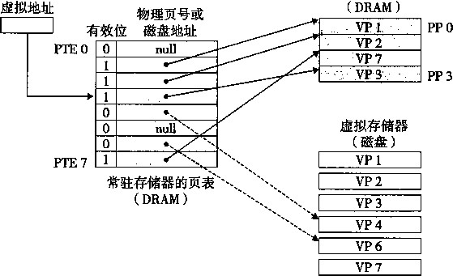
图9-7 VM缺页（之后）。缺页处理程序选择VP 4作为牺牲页，并从磁盘上用VP 3的拷贝取代它。 在缺页处理程序重新启动导致缺页的指令之后，该指令将从存储器中正常地读取字，而不会再 产生异常
9.3.5 分配页面
图9-8展示了当操作系统分配一个新的虚拟存储器页时对我们示例页表的影响，例如，调用 malloc的结果。在这个示例中，通过在磁盘上创建空间并更新PTE 5,使它指向磁盘上这个新 创建的页面，从而分配VP5。
9.3.6 又是局部性救了我们
当我们中的许多人都了解了虚拟存储器的概念之后，我们的第一印象通常是它的效率应该是 非常低的。因为不命中处罚很大，我们会担心页面调度会破坏程序性能。实际上，虚拟存储器工 作得相当好,这主要归功于我们的老朋友局部性（locality)。
物理存储器
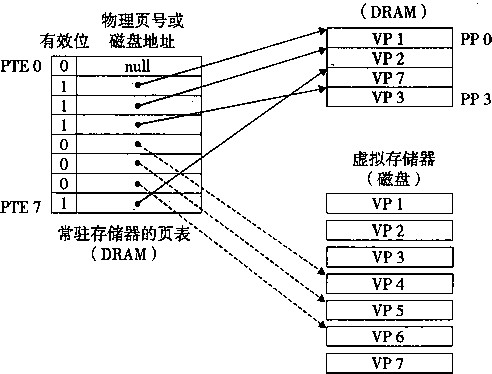
图9-8分配一个新的虚拟页面。内核在磁盘上分配VP5, 并且将PTE 5指向这个新的位置
尽管在整个运行过程中程序引用的不同页面的总数可能超出物理存储器总的大小，但是局部 性原则保证了在任意时刻，程序将往往在一个较小的活动页面（active page)集合上工作，这个 集合叫做工作集（working set)或者常 驻集（resident set)。在初始开销，也就 是将工作集页面调度到存储器中之后，
接下来对这个工作集的引用将导致命 中，而不会产生额外的磁盘流量。
只要我们的程序有好的时间局部 性，虚拟存储器系统就能工作得相当 好。但是，当然不是所有的程序都能 展现良好的时间局部性。如果工作集 的大小超出了物理存储器的大小，那 么程序将产生一种不幸的状态，叫做 颠簸（thrashing),这时页面将不断地 换进换出。虽然虚拟存储器通常是有 效的，但是如果一个程序性能慢得像 爬一样，那么聪明的程序员会考虑是 不是发生了颠簸。
统计缺页次数
你可以利用Unix的getrusage函数监测缺页的数量（以及许多其他的信息）。
9.4 虚拟存储器作为存储器管理的工具
在上一节中，我们看到虚拟存储器是如何提供一种机制，利用DRAM缓存来自通常更大的 虚拟地址空间的页面。有趣的是，一些早期的系统，比如DECPDP-11/70,支持的是一个比物理 存储器更小的虚拟地址空间。然而，虚拟地址仍然是一个有用的机制，因为它大大地简化了存储 器管理，并提供了一种自然的保护存储器的方法。
虚拟地址空间
物理存储器
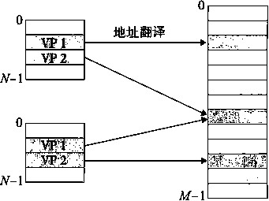
共享页面
VM如何为进程提供独立的地址空间。操作系统为 系统中的每个进程都维护一个独立的页表
到目前为止，我们都假设有一个单独的页表，将一个虚拟地址空间映射到物理地址空间。实 际上，操作系统为每个进程提供了一个独立的页表，因而也就是一个独立的虚拟地址空间。图 9-9展示了基本思想。在这个示例中，进 程z•的页表将VP1映射到PP2, VP2映 射到PP 7。相似地，进程）的页表将VP 1 映射到PP 7, VP2映射到PP 10。注意， / ：
多个虚拟页面可以映射到同一个共享物 理页面上。
按需页面调度和独立的虚拟地址空 间的结合，对系统中存储器的使用和管@ 8 力 理造成了深远的影响。特别地，VM简 化了链接和加载、代码和数据共享，以
图9-9
及应用程序的存储器分配。
• 简化链接。 独立的地址空间允许每个进程的存储器映像使用相同的基本格式， 而 不管扣 码和数据实际存放在物理存储器的何处。例如，像我们在图8-13中看到的，一个给定的 Linux系统上的每个进程都使用类似的存储器格式。文本节总是从虚拟地址0x08048000 处开始（对于32位地批空间），或者从OxdOOOOO处开始（对于64位地址空间）。数据和 bss节紧跟在文本节后面。栈占据进程地址空间最高的部分，并向下生长。这样的一致性 极大地简化了链接器的设计和实现，允许链接器生成全链接的可执行文件，这些可执行文 件是独立于物理存储器中代码和数据的最终位置的。
• 简化加载。 虚拟存储器还使得容易向存储器中加载可执行文件和共享对象文件。回想一下 第7章，在ELF可执行文件中.text和.data节是连续的。要把这些节加载到一个新创 建的进程中，Linux加载器分配虚拟页的一个连续的片（chunk),从地址0x08048000处 开始（对于32位地址空间），或者从0x400000处开始（对于64位地址空间），把这些虚 拟页标记为无效的（即未被缓存的)，将页表条目指向目标文件中适当的位置。有趣的是, 加载器从不实际拷贝任何数据从磁盘到存储器。在每个页初次被引用时，要么是CPU取指 令时引用的，要么是一条正在执行的指令引用一个存储器位置时引用的，虚拟存储器系统 会按照需要自动地调入数据页。
将一组连续的虚拟页映射到任意一个文件中的任意位置的表示法称 做存储器映射 （memory mapping)。Unix提供一个称为mmap的系统调用，允许应用程序自己做存储器映射。我们会在 9.8节中更详细地描述应用级存储器映射。
简化共享。 独立地址空间为操作系统提供了一个管理用户进程和操作系统自身之间共享的一 致机制。一般而言，每个进程都有自己私有的代码、数据、堆以及栈区域，是不和其他进程 共享的。在这种情况下，操作系统创建页表，将相应的虚拟页映射到不同的物理页面。
然而，在一些情况下，还是需要进程来共享代码和数据。例如，每个进程必须调用相同的操 作系统内核代码，而每个C程序都会调用C标准库中的程序，如printf。操作系统通过将不 同进程中适当的虚拟页面映射到相同的物理页面，从而安排多个进程共享这部分代码的一个拷 贝，而不是在每个进程中都包括单独的内核和C标准库的拷贝，如图9-9所示。
• 简化存储器分配。 虚拟存储器为向用户进程提供一个简单的分配额外存储器的机制。当一 个运行在用户进程中的程序要求额外的堆空间时（如调用malloc的结果)，操作系统分 配一个适当数字（例如幻个连续的虚拟存储器页面，并且将它们映射到物理存储器中任 意位置的个任意的物理页面。由于页表工作的方式，操作系统没有必要分配&个连续的 物理存储器页面。页面可以随机地分散在物理存储器中。
9.5 虚拟存储器作为存储器保护的工具
任何现代计算机系统必须为操作系统提供手段来控制对存储器系统的访问。不应该允许一个 用户进程修改它的只读文本段。而且也不应该允许它读或修改任何内核中的代码和数据结构。不 应该允许它读或者写其他进程的私有存储器，并且不允许它修改任何与其他进程共享的虚拟页 面，除非所有的共享者都显式地允许它这么做（通过调用明确的进程间通信系统调用）。
就像我们所看到的，提供独立的地址空间使得分离不同进程的私有存储器变得容易。但是， 地址翻译机制可以以一种自然的方式扩展到提供更好的访问控制。因为每次CPU生成一个地址 时，地址翻译硬件都会读一个PTE,所以通过在PTE上添加一些额外的许可位来控制对一个虚 拟页面内容的访问十分简单。图9-10展示了大致的思想。
在这个示例中，每个PTE中已经添加了三个许可位。SUP位表示进程是否必须运行在内核 (超级用户）模式下才能访问该页。运行在内核模式中的进程可以访问任何页面，但是运行在用 户模式中的进程只允许访问那些SUP为0的页面。READ位和WRITE位控制对页面的读和写访 问。例如，如果进程z•运行在用户模式下，那么它有读VPO和读写VP1的权限。然而，不允许 它访问VP2 0
如果一条指令违反了这些许可条件，那么CPU就触发一个一般保护故障，将控制传递给一 个内核中的异常处理程序。Unix外壳一般将这种异常报告为“段错误”（segmentationfault)。
带许可位的页表
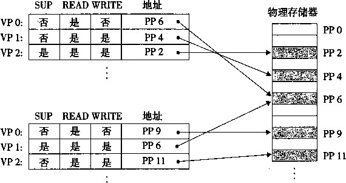
图 9-10 用虚拟存储器来提供页面级的存储器保护
9.6 地址翻译
这一节讲述的是地址翻译的基础知识。我们的目标是让你对硬件在支持虚拟存储器中的角色 有正确的评价，并给你足够多的细节使得你可以亲手演示一些具体的示例。不过，要记住我们省 略了大量的细节，尤其是和时序相关的细节，虽然这些细节对硬件设计者来说是非常重要的，但 是超出了我们讨论的范围。图9-11概括了我们在本节将要使用的所有符号，供读者参考。
基本参数 |
|
符号 |
描述 |
N=2 n |
虚拟地址空间中的地址数量 |
M=2 m |
物理地址空间中的地址数量 |
P = 2 P |
页的大小（字节） |
虚拟地址（VA)的组成部分 |
|
符号 |
描述 |
VP0 |
虚拟页面偏移量（字节） |
VPN |
虚拟页号 |
TLBI |
TLB索引 |
TLBT |
TLB标记 |
物理地址（PA)的组成部分 |
|
符号 |
描述 |
PPO |
物理页面偏移量（字节） |
PPN |
物理页号 |
CO |
缓冲块内的字节偏移量 |
CI |
高速缓存索引 |
CT |
高速缓存标记 |
图 9-11 地址翻译符号小结
形式上来说，地址翻译是一个#元素的虚拟地址空间（VAS)中的元素和一个M元素的物 理地址空间（PAS)中元素之间的映射，
MAP:VAS 一 PAS U 0
这里
i A ' 如果虚拟地址3处的数据在PAS的物理地址I处 MAP (A)= <
I 0 如果虚拟地址乂处的数据不在物理存储器中
图9-12展示了 MMU如何利用页表来实现这种映射。CPU中的一个控制寄存器 ， 页表基 址寄存器（Page Table Base Register, PTBR)指向当前页表。《位的虚拟地址包含两个部分：一 个位的虚拟页面偏移（Virtual Page Offset, VPO)和一个（w~p)位的虚拟页号（Virtual Page Number, VPN)。MMU利用VPN来选择适当的PTE。例如，VPN 0选择PTE 0, VPN 1选择 PTE 1,以此类推。将页表条目中物理页号（Physical Page Number, PPN)和虚拟地址中的VPO 串‘联起来，就得到相应的物理地址。注意，因为物理和虚拟页面都是P字节的，所以物理页面 偏移（Physical Page Offset, PPO)和 VPO 是相同的。 ，
虚拟地址
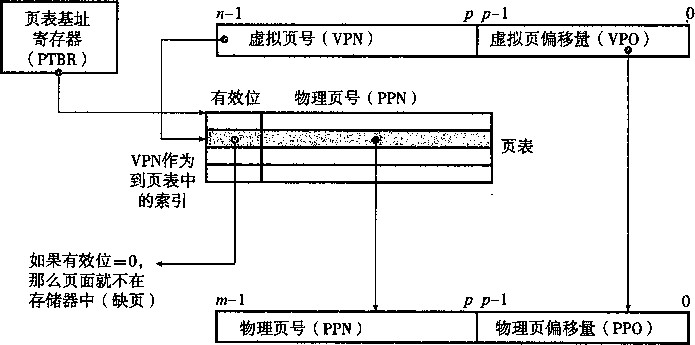
物理地址
图9-12使用页表的地址翻译
图9-13a展示了当页面命中时，CPU硬件执行的步骤。
。第一步： 处理器生成一 个虚拟 地址，并把它传送给MMU。
•第二步：MMU生成PTE地址，并从髙速缓存/主存请求得到它。
第三步：高速缓存/主存向MMU返回PTE。
•第四步：MMU构造物理地址，并把它传送给高速缓存/主存。
第五步： 高速缓存/主存返回所请求的数据字给处理器。
页面命中完全是由硬件来处理的，与之不同的是，处理缺页要求硬件和操作系统内核协作完 成，如图9-13b所示。
第一步到第三步： 和图9-13a中的第一步到第三步相同。
•第四步：PTE中的有效位是零，所以MMU触发了一次异常，传递CPU中的控制到操作 系统内核中的缺页异常处理程序。
第五步 ：缺页处理程序确定出物理存储器中的牺牲页，如果这个页面已经被修改了，则把 它换出到磁盘。
•第六步：缺页处理程序页面调入新的页面，并更新存储器中的PTE。
•第七步：缺页处理程序返回到原来的进程，再次执行导致缺页的指令。CPU将引起缺页的 虚拟地址重新发送给MMU。因为虚拟页面现在缓存在物理存储器中，所以就会命中，在 MMU执行了图9-13b中的步骤之后，主存就会将所请求字返回给处理器。
CPU芯片 ©
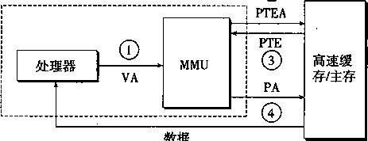
a) K面命中
④
@练习题9:3给定一个32位的虚拟地址空间和一个24位的物理地址，对于下面的页面大小凡确定 VPN、VPO、PPN和PPO中的位数：
P |
#VPN 位 |
#VP0 位 |
#PPN 位 |
#PP0 位 |
1KB |
1 ' , . |
|||
2KB |
||||
4KB |
||||
8KB |
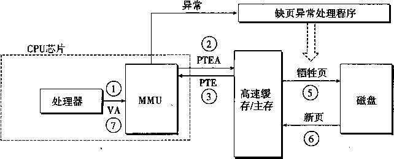
b)缺页
图9-13页面命中和缺页的操作视图。VA :虚拟地址。PTEA:页表条目地址。PTE:页表条目。 PA ：物理地址
④
9.6.1结合高速缓存和虚拟存储器
在任何既使用虚拟存储器又使用SRAM高速缓存的系统中,都存在应该使用虚拟地址还是 使用物理地址来访问SRAM高速缓存的问题。尽管关于这个折中的#细讨论已经超出了我们的 讨论范围，但是大多数系统是选择物理寻址的。使用物理寻址，多个进程同时在高速缓存中有存 储块和共享来自相同虚拟页面的块成为很简单的事情。而且,高速缓存无需处理保护问题，因为 访问权限的检查是地址翻译过程的一部分。
图9-14展示了一个物理寻址的高速缓存如何和虚拟存储器结合起来。主要的思路是地址翻
译发生在高速缓存查找之前。注意，页表条目可以缓存，就像其他的数据字一样。
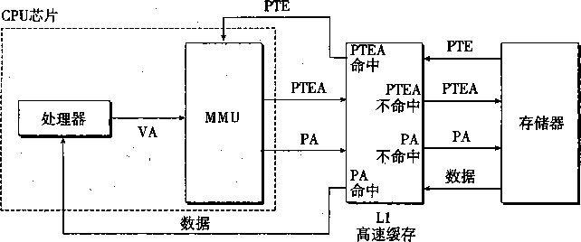
图9-14将VM与物理寻址的髙速缓存结合起来。VA:虚拟地址。PTEA:页表条目地址。PTE :页 表条目。PA :物理地址
9,6.2知用TLB加速地址翻译
正如我们看到的，每次CPU产生一个虚拟地址,MMU就必须査阅一个PTE,以便将虚拟 地址翻译为物理地址。在最糟糕的情况下，这又会要求从存储器取一次数据，代价是几十到几百 个周期。如果PTE碰巧缓存在L1中，那么开销就下降到1个或2个周期。然而，许多系统都试 图消_是这样的开销，它们在MMU中包括了一个关于PTE的小的缓存，称为翻 译后备缓冲器 (Translation Lookaside Buffer, TLB) 0
TLB是一个小的、虡拟寻址的缓存，其中每一行都保存着一个由单个PTE组成的块。TLB 通常有高度的相连性。如图9-15所未，角于组选择和行匹配的索引和标记字段是从虚拟地址中 的虚拟页号中提取出来的。如果TLB有r=T个组，那么TLB 索引 （TLBI)是由VPN的/个最 低位组成的,而TLB 标记 （TLBT)是由VPN
VPO
TLB标记(TLBT) TLB索引（TLBI)
中剩余的俾组成的。 ^ p+t p+t ~ l pp ~ l 0
图9-1,5 —个用来访问TLB的虚拟地址的组成部分
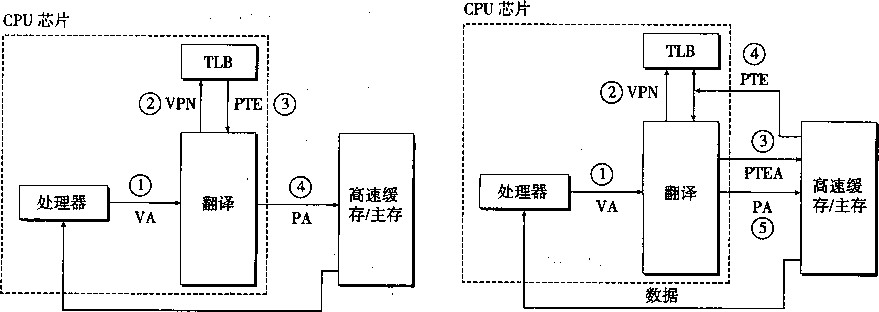
©数据 a) TLB命中
⑥
b ) TLB不命中
:图9-16 . TLB命中和不命中的操作视图
VPN
图9-16a展示了当TLB命中时（通常情 况）所包括的步骤。这里的关键点是，所有的 地址翻译步骤都是在芯片上的MMU中执行的，
因此非常快。
•第一步：CPU产生一个虚拟地址。
第二步和第三步 ： MMU从TLB中取出相应的PTE。
。第 四步： MMU将这个虚拟地址翻译成一个物理地址，并且将它发送到高速缓存/主存。
•第五步：高速缓存/主存将所请求的数据字返回给CPU。
当TLB不命中时，MMU必须从L1缓存中取出相应的PTE,如图9-16b所示。新取出的PTE存 放在TLB中，可能会覆盖一个已经存在的条目。
9.6.3多级页表
到目前为止，我们一直假设系统只用一个单独的页表来进行地址翻译。但是如果我们有一个 32位的地址空间、4KB的页面和一个4字节的PTE,那么即使应用所引用的只是虚拟地址空间 中很小的一部分，也总是需要一个4MB的页表驻留在存储器中。对于地址空间为64位的系统 来说，问题将变得更复杂。
用来压缩页表的常用方法是使用层次结构的页表。用一个具体的示例是最容易理解这个思 想的。假设32位虚拟地址空间被分为4KB的页，而每个页表条目都是4字节。还假设在这一时 刻，虚拟地址空间有如下形式：存储器的前2K个页面分配给了代码和数据，接下来的6K个页 面还未分配，再接下来的1023个页面也未分配，接下来的1个页面分配给了用户栈。图9-17展 示了我们如何为这个虚拟地址空间构造一个两级的页表层次结构。
一级页表中的每个PTE负责映射虚拟地址空间中一个4MB的片（chunk),这里每一片都是 由1024个连续的页面组成的。比如，PTE0映射第一片，PTE1映射接下来的一片，以此类推。 假设地址空间是4GB, 1024个PTE已经足够覆盖整个空间了。
如果片/中的每个页面都未被分配，那么一级PTEz•就为空。例如，在图9-17中，片2〜7 是未被分配的。然而，如果在片/中至少有一个页是分配了的，那么一级PTEi就指向一个二级 页表的基址。例如，在图9-17中，片0、1和8的所有或者部分已被分配，所以它们的一级PTE 就指向二级页表。
二级页表中的每个PTE都负责映射一个4KB的虚拟存储器页面，就像我们查看只有一级的 页表一样。注意，使用4字节的PTE,每个一级和二级页表都是4KB字节，这刚好和一个页面 的大小是一样的。
一级页表 二级页表 虚拟存储器
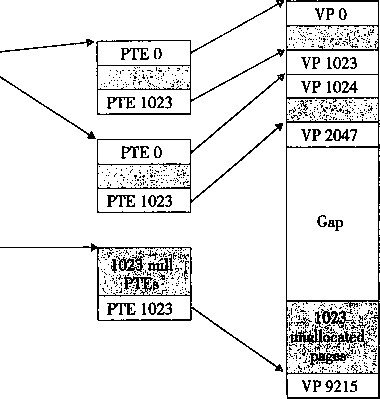
已分配的2K个代码和 [数据VMS
-6K个未分配的VM页
图9-17 —个两级页表层次结构。注意地址是从上往下增加的 www.TopSage.com
PTE 3 (null)
PTE 2 (null)
PTE 6 (null)
PTE 5 (null)*
PTE 4 (null)
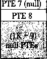
| 1023个未分配的页 } 1个已分配的用做栈的VM页
这种方法从两个方面减少了存储器要求。第一，如果一级页表中的一个PTE是空的 ， 那么 相应的二级页表就根本不会存在，这代表着一种巨大的潜在节约，因为对.于一个典型的程序 , 4GB的虚拟地址空间的大部分都将是未分配的。第二，只有一级页表才需要总是在主存中；虚 拟存储器系统可以在需要时创建、页面调入或调出二级页表，这就减少了主存的压力；只有最经 常使用的二级页表才需要缓存在主存中。
1级页表
2级页表
r III# |
|||
VPN1 VPN2
VPN k VPO
虚拟地址
图9-18描述了使用A级页表层次结构的地址翻译。虚拟地址被划分成为&个VPN和1个 VPOo每个VPN z•都是一个到第z•级页表的索引，其中1 < z’ <匕第y级页表中的每个PTE, 1 <j < k 一 1,都指向第^/十1级的某个 页表的基址。第A级页表中的每个PTE 包含某个物理页面的PPN或一个磁盘 块的地址。为了构造物理地址，在能够 确定PPN之前，MMU必须访问个 PTE。对于只有一级的页表结构，PPO 和VPO是相同的。
物理地址
图9-18使用A级页表的地址翻译
PPN
访问A个PTE,第一眼看上去昂贵 而不切实际。然而，这里TLB能够起 作用，是通过将不同层次上页表的PTE 缓存起来。实际上 ， 带多级页表的地址 翻译并不比单级页表慢很多。
综合：端到端的地址翻译
在这一节里，我们通过一个具体的端到端的地址翻译示例，来综合一下我们刚学过的这些内 容，这个示例运行在有一个TLB和Ll d-cache的小系统上。为了保证可管理性，我们做出如下 假设：
•存储器是按字节寻址的。
•存储器访问是针对1字节的字的（不是4字节的字)。
•虚拟地址是14位长的0=14)。
•物理地址是12位长的 im = 12)。
•页面大小是64字节（P = 64)。
TLB是四路组相连的，总共有16个条目。
•Ll d-cache是物理寻址、直接映射的，行大小为4字节，而总共有16个组。
图9-19展示了虚拟地址和物理地址的格式。因为每个页面是2 6 = 64字节，所以虚拟地址和 物理地址的低 6 位分别作为VPO和PPO,虚拟地址的高8位作为VPN,物理地址的高 6 位作为 PPNo
13 12 11 10 9 8 7 6 5 4 3 2 1 0
虚拟地址 丨 | | | j 1 | | | | | | | |
< VPN ^ VPO ►
(虚拟页号)• （虚拟页偏移）
10 98765432 10
物理地址 | | | | | | | | | | | |
< PPN x PP0 ►
(物理页号） （物理页偏移）
图9-19小存储器系统的寻址。假设14位的虚拟地址（《=14), 12位的物理地址（m=12)和64字 节的页面（P = 64)
图9-20展示了我们小存储器系统的一个快照，包括TLB (见图9-20a)、页表的一部分（见 图9-20b)和Ll高速缓存（见图9-20C)。在TLB和高速缓存的图上面，我们还展示了访问这些 设备时硬件是如何划分虚拟地址和物理地址的位的。
-TLBT-
13 12 11 10 9 8 7 6 5 4 3 2 1 0
虚拟地址
VPO-
VPN-
位标记位PPN有效位标记位PPN有效位标记位PPN有效位标记位PPN有效位
|
0 |
03 |
- |
0 |
09 |
0D |
1 |
00 |
- |
0 |
07 |
02 |
1 |
|
1 |
03 |
2D |
1 |
02 |
- |
0 |
04 |
一 . |
0 |
0A |
- |
0 |
|
2 |
02 |
- |
0 |
08 |
. — . |
0 |
06 |
- |
0 |
03 |
- |
0 |
|
3 |
07 |
- |
0 |
03 |
0D |
1 |
0A |
34 |
1 |
02 |
•- |
0 |
a) TLB：四组，16个条目，四路组相联
VPN PPN有效位 00
位
效
有
PN
P
13 |
1 |
17 |
1 |
09 |
1 |
- |
0 |
- |
0 |
2D |
1 |
11 |
1 |
0D |
1 |
I.08090A0B0C0D0E0F
28 |
1 |
— |
0 |
33 |
1 |
02 |
1 |
— |
0 |
16 |
1 |
— |
0 |
— |
0 |
01
02
03
04
05
07
b)页表：只展示了前16个PTE